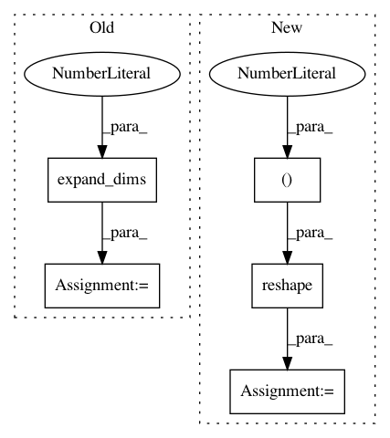

d14ad44d0f425c04be5a6cdca13fc513fba53843,test_models_train.py,,,#,11
Before Change
loss=deep_speaker_loss,
metrics=["accuracy"])
inputs = list(np.expand_dims(network_inputs, axis=1))
model.fit(inputs, np.expand_dims([0] * len(inputs), axis=1))
print(model.summary())
After Change
if __name__ == "__main__":
network_inputs = np.random.uniform(size=(BATCH_SIZE, NUM_FRAMES, 16, 16, 1))
model = convolutional_model(batch_input_shape=(BATCH_SIZE * NUM_FRAMES, 16, 16, 1))
model.compile(optimizer="adam",
loss="mse",
metrics=["accuracy"])
network_inputs = np.reshape(network_inputs, (-1, 16, 16, 1))
output = model.predict(network_inputs)
// stub_targets = np.expand_dims([0] * BATCH_SIZE * NUM_FRAMES, axis=1)
In pattern: SUPERPATTERN
Frequency: 3
Non-data size: 5
Instances
Project Name: philipperemy/deep-speaker
Commit Name: d14ad44d0f425c04be5a6cdca13fc513fba53843
Time: 2017-06-12
Author: premy@reactive.co.jp
File Name: test_models_train.py
Class Name:
Method Name:
Project Name: broadinstitute/keras-rcnn
Commit Name: df93c4e61e7ca1db25f1ee346ac0516685498b02
Time: 2017-08-15
Author: allen.goodman@icloud.com
File Name: keras_rcnn/backend/common.py
Class Name:
Method Name: _mkanchors
Project Name: scikit-image/scikit-image
Commit Name: 3071a5a24e23b4f3ff0184b3a09cda4102838460
Time: 2017-12-06
Author: contact@kne42.me
File Name: skimage/measure/_moments.py
Class Name:
Method Name: moments_coords_central